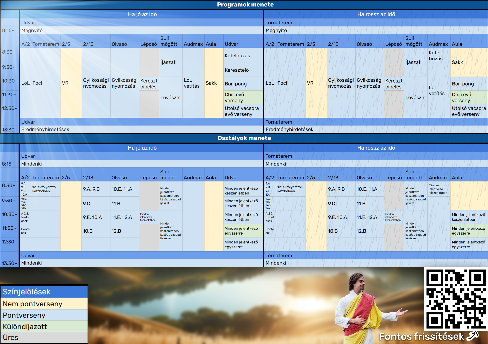

Köszöntelek!
Nevem Jézus Krisztus, kb 2029 éves vagyok. 2024-es diáknapra és kampányidőszakra eljöttem a Puskásba, hogy kicsit jobbá tegyem mindenkinek a napját egy jól megteremtett, mondhatni mennyei diáknappal. Innen is köszönöm a 12.B-nek a meghívást!
Izgalmas programjaink voltak, köztük néhány alapvető / megszokottal és néhány újonnan kitaláltal, mindemellett tényleg egy mennyei hangulatot szerettünk volna teremteni díszítéssel, zenékkel stb..., amiből sajnos idő híján nem mindenre volt alkalmunk.
Köszönjük, hogy megszavaztátok minket, a 12.B-t és köszönjük, hogy részt vettetek a programjainkon!
Több rólamTervezett menetrend volt
Nyertünk, és még a Holdról is látszik!
Statisztikák valamikor (talán)
Programjaink voltak
Sörpong helyett borpong (legális okokból szörpi).
Mindenféle chiliket / chilis ételeket kellett enniük a versenyzőknek. Aki kitartott a végéig, az nyert.
Osztályok közötti verseny. + pontért az osztályok készíthettek drapit.
{kind=link}
Egy keresztet kellett időre felcipelnie a versenyzőnek a lépcsőn. A leggyorsabbak nyertek.
Egy vízzel teli vödörben kellett a versenyzőknek a lélegzetüket visszatartania. Akik a leghosszabb ideig tartották, nyertek.
Amelyik csapat előszőr átlépte a felező vonalat, az veszített.
Osztályok közötti bajnokság.
Íjakkal és airsoft fegyverekkel való célbalövés ördögökre.
A versenyzőknek segítenie kellett Jézusnak kideríteni egy gyilkossági ügyet mindenféle bizonyítékok és jelek segítségével.
Egy evő verseny az utolsó vacsora hangulatával. Akik a leggyorsabban megették az előttük lévő ételeket, nyertek.
Virtuális valóságos játékok: Beat Saber, Super Hot stb...
Kampányvideók

Puskás 12.B | Kampányvideó | Intró

Puskás 12.B | Kampány #shorts | Nincs baj!

Puskás 12.B | Kampányvideó klip | Áldás és békesség

Puskás 12.B | Kampány #shorts | Igyál vizet, Jézus fizet

He knows where the real party is #djjesus
Támogatóink
Szabó tanár úr
"Hajrá 12.B!"
Sós tanár úr
"Hú az a hogy is volt? Aaa... Az istentisztelet a jobb jegyekért... vagyis imádkozás a jobb jegyekért. Na az naahgyon jó!"
Kis tanárnő
Igazából nem jelentette ki, hogy támogat minket, de mivel az ofőnk és részt vesz az ötletelésben no meg megosztotta a kampány videónkat, talán iderakhatom.
Vásárhelyi tanár úr
"Dícsértessék!"
Sanyi bá
"Díjazom!"
Büfés néni
Forgathattunk a büféjében.
Gyakori kérdések
Miért nem volt bogrács?
Mert nem akartunk egy rossz bográcsot csinálni. Próbálkozhatnánk így úgy, de jó bogrács programot csak a 12.E (2018e) tudott szervezni. Mondjon akárki akármit, olyan bográcsot más nem lenne képes összehozni.
Kik tépkedték a plakátjainkat?
Több mint valószínű, hogy a 10.B. Egyrészt mert az ő plakátjuk a mi plakátunkról letépett cellukszal volt kiragasztva, másrászt, mert állítólag kitalálták, hogy mi valamiért letéptük a termükbe az egyik plakátjukat (nem igaz, 3 év alatt nem kezdtünk neki tépkedni senkinek sem a plakátjait). Erre ők (majdnem) felnőtt emberként a legmegfelelőbbnek azt találtak, hogy letépik az összes plakátunkat. Mint az oviban.
Kik vagyunk mi?
Egy olyan osztály, aki minden erejét / energiáját belerakja az iskola diákéletébe. Harmadjára indulnuk diákigazgató választáson, eddig mindig másodikak lettünk, mert volt egy nálunk is összeszedettebb osztály, a 12.E (2018e), akik kétszer is elvitték a győzelmet. Első alkalommal simán, mert még nem volt sok tapasztalatunk, második alkalommal pedig nagyon szorosan. Ezek mellett a mi osztályunk élesztette újra a Chipogó iskolaújságot is, amit 4 éven keresztül csináltunk. Nem utolsó sorban pedig van egy YouTube csatornánk, ahová videókat szoktunk gyártani.
Sértőnek találsz valamit?
Ez esetben kérlek ne haragudj, nézd el nekünk. Mivel tudjuk, hogy ez egyeseknek érzékeny téma, igyekszünk nem túlzásokba esni.
Egyéb kérdésed van?
Keress minket a 2. emelet 1. termében.